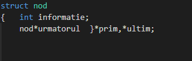
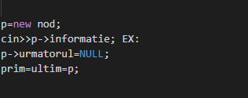
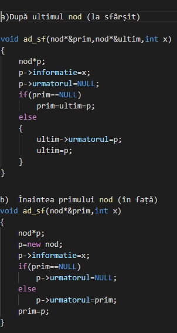
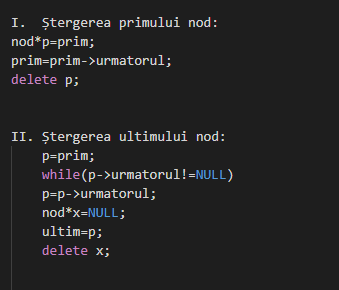
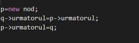
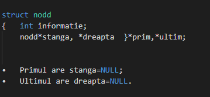
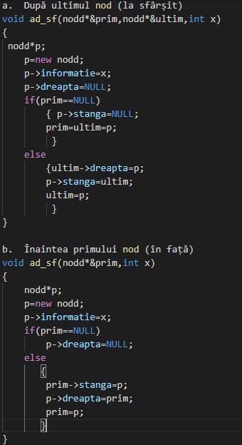
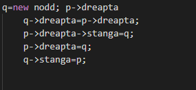
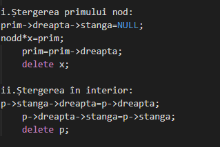

OPERATII LSI
1)Definirea structurii nodului:

2)Crearea primului nod:

3) Adăugarea unui nod:

4)Ștergerea unui nod :

5.Inserarea unui nod

OPERATII LDI
1)Definirea structurii nodului:

2)Adăugarea unui nod:

3)Inserarea unui nod:

4)Ștergerea unui nod:
